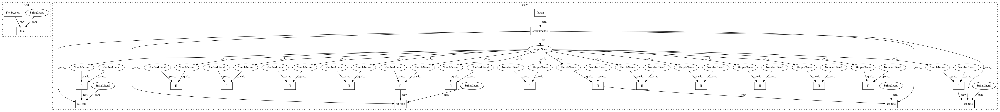

ec5e8863a6352da673b55cb971529f38278cf64e,examples/images_contours_and_fields/triinterp_demo.py,,,#,13
Before Change
plt.contourf(xi, yi, zi_cubic_min_E)
plt.plot(xi, yi, "k-", lw=0.5, alpha=0.5)
plt.plot(xi.T, yi.T, "k-", lw=0.5, alpha=0.5)
plt.title("Cubic interpolation,\nkind="min_E"")
plt.tight_layout()
plt.show()
After Change
// Set up the figure
fig, axs = plt.subplots(nrows=2, ncols=2)
axs = axs.flatten()
// Plot the triangulation.
axs[0].tricontourf(triang, z)
axs[0].triplot(triang, "ko-")
axs[0].set_title("Triangular grid")
// Plot linear interpolation to quad grid.
axs[1].contourf(xi, yi, zi_lin)
axs[1].plot(xi, yi, "k-", lw=0.5, alpha=0.5)
axs[1].plot(xi.T, yi.T, "k-", lw=0.5, alpha=0.5)
axs[1].set_title("Linear interpolation")
// Plot cubic interpolation to quad grid, kind=geom
axs[2].contourf(xi, yi, zi_cubic_geom)
axs[2].plot(xi, yi, "k-", lw=0.5, alpha=0.5)
axs[2].plot(xi.T, yi.T, "k-", lw=0.5, alpha=0.5)
axs[2].set_title("Cubic interpolation,\nkind="geom"")
// Plot cubic interpolation to quad grid, kind=min_E
axs[3].contourf(xi, yi, zi_cubic_min_E)
axs[3].plot(xi, yi, "k-", lw=0.5, alpha=0.5)
axs[3].plot(xi.T, yi.T, "k-", lw=0.5, alpha=0.5)
axs[3].set_title("Cubic interpolation,\nkind="min_E"")
fig.tight_layout()
plt.show()
In pattern: SUPERPATTERN
Frequency: 3
Non-data size: 23
Instances
Project Name: matplotlib/matplotlib
Commit Name: ec5e8863a6352da673b55cb971529f38278cf64e
Time: 2018-03-26
Author: pmhobson@gmail.com
File Name: examples/images_contours_and_fields/triinterp_demo.py
Class Name:
Method Name:
Project Name: matplotlib/matplotlib
Commit Name: ec5e8863a6352da673b55cb971529f38278cf64e
Time: 2018-03-26
Author: pmhobson@gmail.com
File Name: examples/images_contours_and_fields/contour_image.py
Class Name:
Method Name:
Project Name: matplotlib/matplotlib
Commit Name: ec5e8863a6352da673b55cb971529f38278cf64e
Time: 2018-03-26
Author: pmhobson@gmail.com
File Name: examples/images_contours_and_fields/triinterp_demo.py
Class Name:
Method Name:
Project Name: matplotlib/matplotlib
Commit Name: 27c2dc10bb9f83026db6378c151d8108fc044af8
Time: 2018-06-27
Author: jklymak@gmail.com
File Name: examples/images_contours_and_fields/contour_image.py
Class Name:
Method Name: